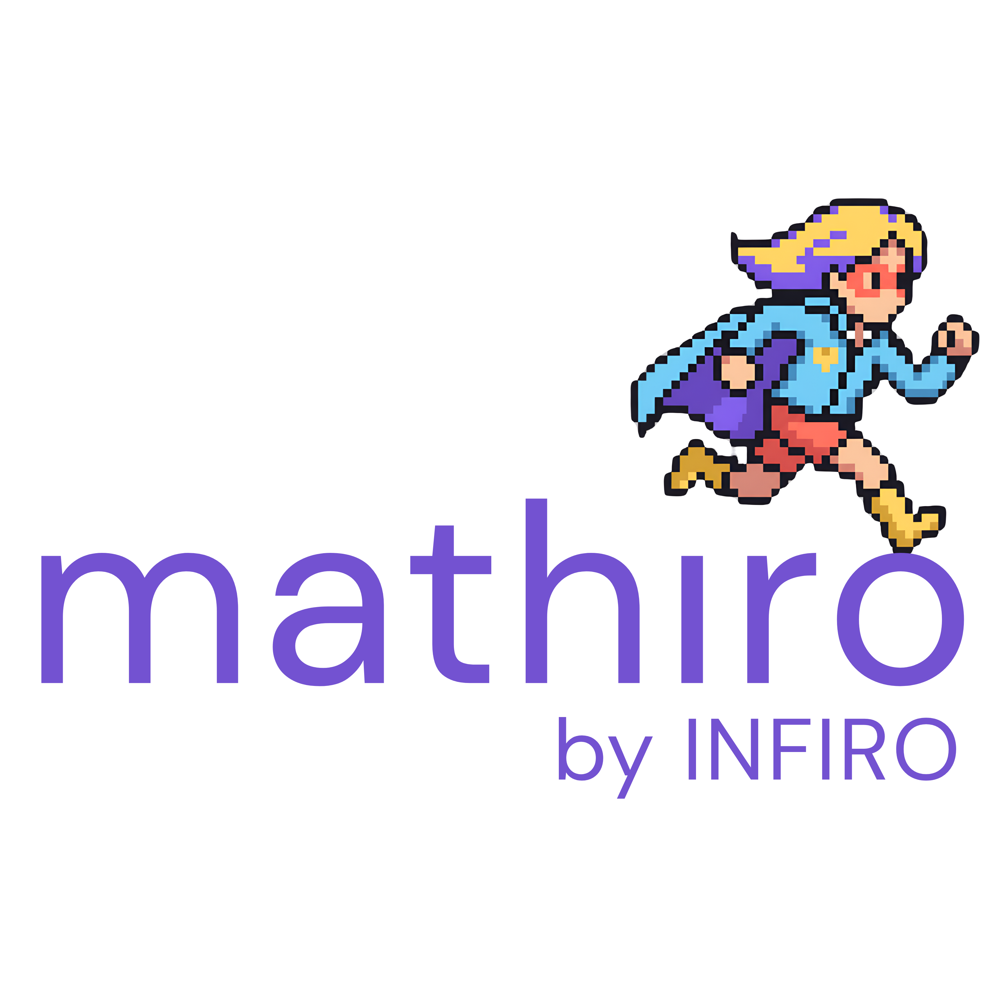

Moja ścieżka akademicka oraz inicjatywy, dzięki którym stale poszerzam swoje kompetencje w branży Tech & Data.
Program studiów łączy zaawansowaną wiedzę matematyczną z nowoczesnymi narzędziami informatycznymi. Skupiam się na analityce, wybierając przedmioty fakultatywne rozwijające umiejętności pracy z danymi.
* Powyżej wyszczególniłam kluczowe dla mojego profilu przedmioty oraz narzędzia, z którymi pracuję w ramach toku studiów.
Stawiam na proaktywność. Aktywnie promuję naukę, biorę udział w hackathonach i programach wspierających kobiety w branży Tech & Data.
Aktywne promowanie kierunków ścisłych, inżynieryjnych i technologicznych wśród kobiet oraz wspieranie studentek w rozwoju naukowym.
Wyróżnienie mojej działalności akademickiej i technologicznej w nadchodzącym, wiosennym wydaniu magazynu.
Artykuł wkrótceUdział w programie mentoringowym wspierającym rozwój kompetencji technologicznych i biznesowych.

Stworzenie prototypu aplikacji EdTech opartej na etnomatematyce i AI. Rozwiązanie personalizuje naukę matematyki poprzez pasje uczniów. Szczegóły w Projekty IT!
Intensywny rozwój kompetencji, śledzenie najnowszych trendów analitycznych i networking w branży technologicznej.
Inicjatywa prestiżowej firmy technologicznej, promująca i rozwijająca talenty w obszarze IT.
Obecność na wydarzeniach branżowych i śledzenie innowacji na styku technologii i biznesu.